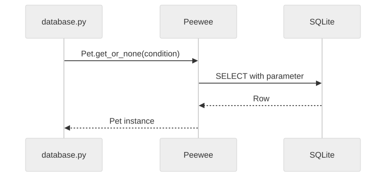

The pet database layer, implemented with Peewee
Gregory S. DeLozier, PhD
Input: a pet identifier
Output: a dictionary, or None
The implementation now uses an object-relational mapper (ORM).

Peewee generates Structured Query Language (SQL).
http://127.0.0.1:5000/list
Setup also runs separately:
python3 setup_database.py
class Pet(BaseModel):
name = TextField(null=False)
type = TextField(null=False)
age = IntegerField(default=0)
food = TextField(null=True)Peewee supplies the integer primary key,
id.
| Expression | Meaning |
|---|---|
Pet |
Model class for the table |
Pet.name |
Field used to build a query |
pet.name |
Name on one instance |
pet.id |
Identifier of that pet |
Pet describes records. pet holds
one record’s values.
def get_pets():
query = Pet.select().order_by(Pet.name, Pet.id)
return [pet_to_dict(pet) for pet in query]Query construction:
select().order_by(...)
Execution: iteration over query
Pet.id == int(id) builds a SQL
condition.
def pet_to_dict(pet):
return {
"id": pet.id, "name": pet.name,
"type": pet.type, "age": pet.age,
"food": pet.food,
}The templates keep using pet['food'].
create() inserts and returns the saved
instance.
| Record | Before | After |
|---|---|---|
Casey, id=10 |
food="kibble" |
food="chicken" |
| Part | Job |
|---|---|
update(...) |
Replacement values |
where(...) |
Which pet |
execute() |
Run the statement |
The condition selects the record.
The execution performs the deletion.
| Action | Object’s food | Stored food |
|---|---|---|
| Load Casey | kibble | kibble |
Assign pet.food |
chicken | kibble |
Call pet.save() |
chicken | chicken |
Successful block: commit both.
Exception escaping the block: roll back both.
query = Pet.select().where(Pet.type == "cat")
statement, parameters = query.sql()
print(statement)
print(parameters)Where is the condition? Where is the value?
| Check | What it establishes |
|---|---|
| Close, reopen, read | Values reached the database |
| Assign, read, save, read | When object changes persist |
Raise inside atomic() |
Grouped writes roll back |
get_pet(id) could return a dictionary or a Peewee
instance.
What changes for the caller?
Keep the return contract explicit when changing the implementation.